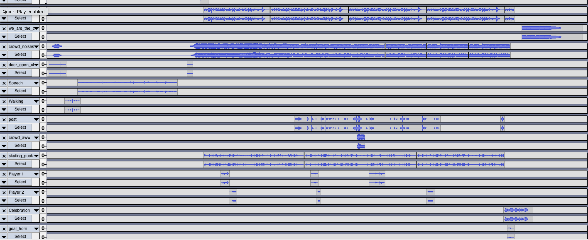

Hello! Below you will find some projects I've worked on in my Composing Digital Media class.

This soundscape takes you through an underdog's perspective of overtime in a championship game. Hear a coach's rally speech, players skating and trash talking, and the crowd in the background. Can the underdogs get the win?
Boston has ruled for too long, it's Philly's time to shine. All the signs point to a Philadelphia run over the next decade. The future is here and it's time to follow in the footsteps of the 2017 Eagles and win more championships.